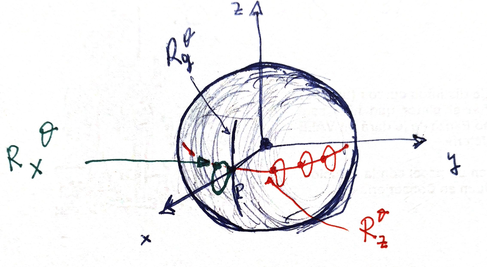
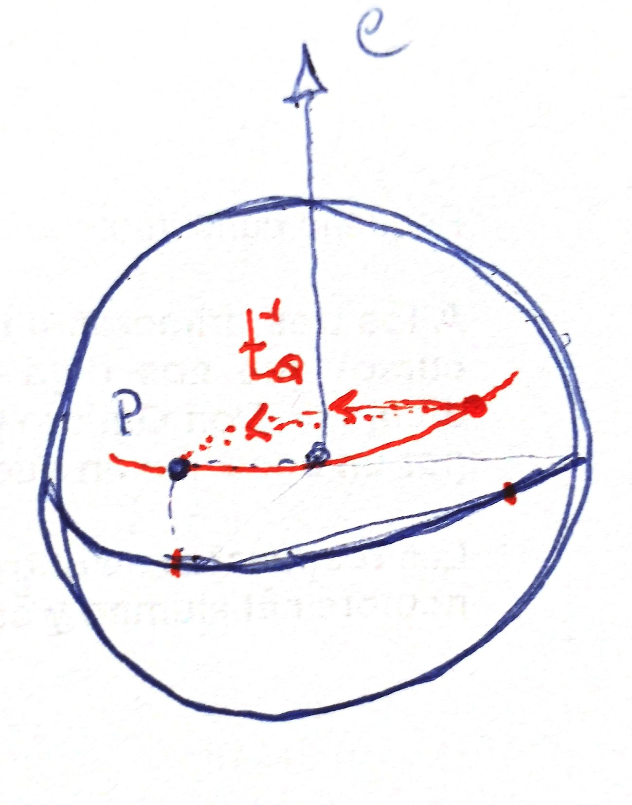
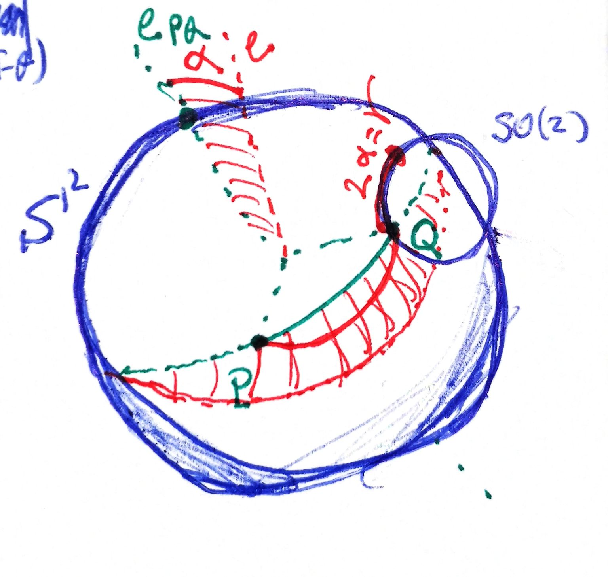

Proposition
Given a group action $G\times M \mapsto M$ free and transitive, fixed $m\in M$ we have a bijection
$$ G \stackrel{\cong}{\longmapsto} M $$with $g\mapsto gm$
$\blacksquare$
See principal homogeneous spaces in homogeneous space .
This result can be proven easily and let us use the manifold $M$ to visualize $G$.
If the action is not free (but still transitive), we cannot visualize $G$ (for example, $SO(3)$ acting over $S^2$). Anyway, observe first that the stabilizer of every $x\in M$ are all conjugate of each other. And second, if we fix $x\in M$, we can establish a surjection $\pi_x: G\mapsto M$, $\pi_x(g)=gx$, that gives rise to a bijection
$$ \bar{\pi}_{x}: G / G_{x} \rightarrow X $$From here we have a natural bijection
$$ G \longrightarrow \bigsqcup_{m\in M} \{m\} \times \pi_x^{-1}(m) $$that could be translated to a bijection
$$ G \longrightarrow\tilde{M}=\bigsqcup_{m\in M} \{m\} \times G_m $$if we had a \textit{preferred choice} of a $t_m \in G$ such that $t_m x=m$ for every $m\in M$ (need to be proven but I think is easy). Take $g\mapsto (gx,gt_{gx}^{-1})$...
In this circumstances, we can even define an action of $G$ at $\tilde{M}$:
$$ (g, (m,h))\longmapsto (gm,ghg^{-1}) $$But it is not necessarily transitive or free.
But on the other hand, since the action of $G$ on itself is free and transitive, we can copy this action to $\tilde{M}$ with the previous bijection and obtain a new action on $\tilde{M}$
$$ (g, (m,h))\longmapsto (gm,ght_m t_{gm}^{-1}) $$For example, we can see $SO(3)$ as the sphere bundle of $S^2$. Remember
$$ S M:=\left\{(x, v): x \in M, v \in T_{x} M,|v|=1\right\}= $$ $$ =\bigsqcup_{x\in M} \{x\}\times S^1 $$This is this way because if we fix a point $P$ in $S^2$ and define $\pi_P:SO(3)\mapsto S^2$ taking the action on $P$, we have the bijection of $SO(3)$ with $\bigsqcup \{x\}\times \pi_P ^{-1}(x)$ and, even more, we have preferred transformations from one point to another: the great circle paths \textbf{with angle lesser or equal to $\pi$}. So (following result above) we have
$$ SO(3)\stackrel{\equiv}{\longmapsto} \bigsqcup_{x\in S^2} \{x\}\times SO(2) $$given explicitly by
$$ g\longmapsto (gP, g t_{gP}^{-1}) $$where $t_Q$ is the great circle path from $P$ to $Q$.
This bijection is, indeed, a diffeomorphism, as can be proven with the map
$$ \Phi: S\left(\mathbb{S}^{2}\right) \rightarrow S O(3) $$ $$ \Phi(x, v):=[x, v, x \times v] $$that sends the pair of vectors in $\mathbb{R}^3$ $(x,v)$ to the orthogonal matrix $[x, v, x \times v]$.
But let's return to our original map and take $P=(1,0,0)$ and think of several examples to \textit{see} the elements of $SO(3)$.

In general, rotation $R_e^{\theta}$ through an axis no orthogonal to $P$ yields $(Q,R^{\alpha})$ where $Q=R_e^{\theta}P$ and $R^{\alpha}=R_e^{\theta}t_Q^{-1}\in SO(2)$, with $\alpha$ an angle that measures how much $P$ deviates from the great circle corresponding to the axis $e$.

To sum up, we would have something like this: fixed $P\in S^2$, rotations around great circles passing through $P$ and angle $\theta$ are encoded in the arrival point of $P$, $Q$. If the rotation is not along a great circle, is encoded in the same final point $Q$ but with an \textit{internal rotation} of angle $\gamma$ (i.e., an element of the $SO(2)$ of $Q$) related to the angular displacement $\alpha$ of the axis of the rotation respect to the ideal great circle rotation taking $P$ to $Q$ with angle lesser than $\pi$. By mean of examples I guess that $\gamma=2\alpha$:

Possible rotations other than the great circle of axis $e_{PQ}$ taking $P$ to $Q$ arise when we choose a different axis $e$ along the \textit{perpendicular bisector} of $PQ$. The extremal case is when $e=-e_{PQ}$ ($\alpha=\pi$), and then they begin to be repeated (although in a complementary way).
Keep an eye: this is not diffeomporhic to the 3-sphere $S^3$. $S^3$ is diffeomorphic to the covering group $\tilde{SO(3)}=SU(2)$, the double cover of $SO(3)$. See unitary matrix#Unitary matrix#What is SU 2 topologically.
________________________________________
________________________________________
________________________________________
Author of the notes: Antonio J. Pan-Collantes
INDEX: